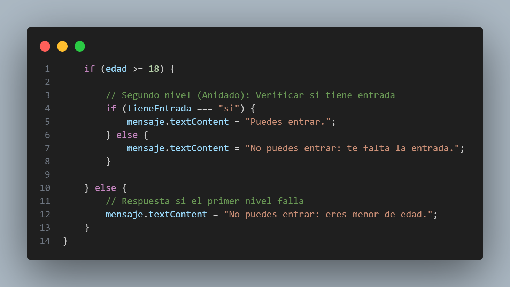

Estos condicionales permiten evaluar multiples condiciones jerarquicamente por medio de una estructura de If o If.....Else y en caso una condicion dentro de otra. Nos sirve para decisiones complejas donde (en caso del if..else) una segunda condicion depende de que la primera sea verdadera.
Un ejemplo de ello es:

Como se puede ver en la imagen, en el primer condicional especificamos a la maquina que si la edad del usuario es mayor o igual a 18 ejecute el segundo bloque de codigo donde vemos otro if donde le indicamos a la maquina que si la respuesta a "tieneEntrada" es si entonces envie un mensaje al usuario que le diga "Puedes entrar." de lo contrario en el primer else le indique que "No puedes entrar: te falta la entrada "
se utilizan para evaluar múltiples condiciones, devolviendo valores booleanos true false y son fundamentales para las estructuras de control If y While.
Los operadores lógicos más comunes son && (AND), || (OR), y ! (NOT), los cuales nos permiten construir expresiones lógicas más complejas.
| OPERADOR | NOMBRE | DESCRIPCIÓN |
|---|---|---|
| && | AND | Devuelve true si ambos operandos son true |
| || | OR | Devuelve true si al menos uno de los operandos es true |
| ! | NOT | Niega el valor |